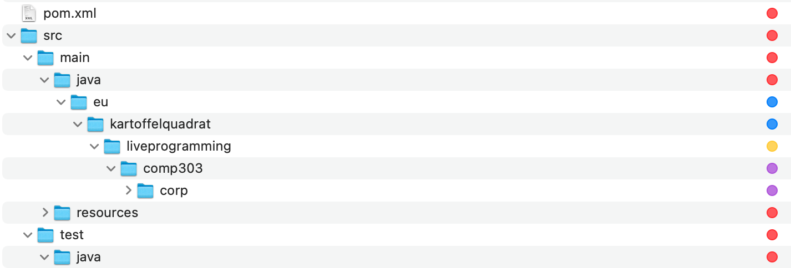

Project Layout
You might be used from other programming languages or simpler projects to just throw in you code files at random place and click a green triangle start button in your IDE without much trouble.
While this may work for some toy examples or little scripting tools, hacked in a day, bigger software projects often have a long list of requirements and likewise are expected to compile and run reliable no matter to platform or developer cloning the project.
This is where maven enters the game. Maven replaces drag and click based project configuration where a developer sets up their project via IDE menus, by a central xml textual description, the `pom.xml.
Files and Folders
The root of a maven project should roughly look like this: 
Before we go into the details, not that there are two important entires at root level:
pom.xmlwhich contains all project configuration. Almost everything presented on this webpage are snippets that extend this file.- A
srcfolder, all your source code, tests, even resources go somewhere into that folder.
Depending on which configurations you add to your pom.xml you might have addition content on top level. But for a start these are the minimum requirement for your project at root level.
Next let's look at the content of the src folder. Everything that carries a red marker in the capture above must be in place, exactly as shown for your project to be valid.
- Your java sources go into
src/main/java - Your java tests fo into
src/test/java - Your resource files go into
src/main/resources
GroupId, ArtifactId, Packages
In the test/java and src/java folder you see subfolders: eu/kartoffelquadrat/printer.
eu/kartoffelquadrathas a green label. This on represents yourgroupId. ThegroupIdis specific to the developer or team of developers responsible for the project. By convention it is the inverted domain name of your affiliation. So for instance if you are a student at McGill you could use:ca/mcgillinstead ofeu/kartoffelquadrat.
Do not use ```eu/kartoffelquadrat for your projects. That domain is owned by me, so you better not pretend to release software on my behalf. ;)printeris theartifactId. It describes the specific purpose of your project. For instance if you are developing a board game tic tac toe client, it could beticTacToeClient.- Optionally you can create further subfolders for packages. E.g. if you have an MVC structure you can place parallel folders for
model,view,controlunder yourartifactId. This is optional.